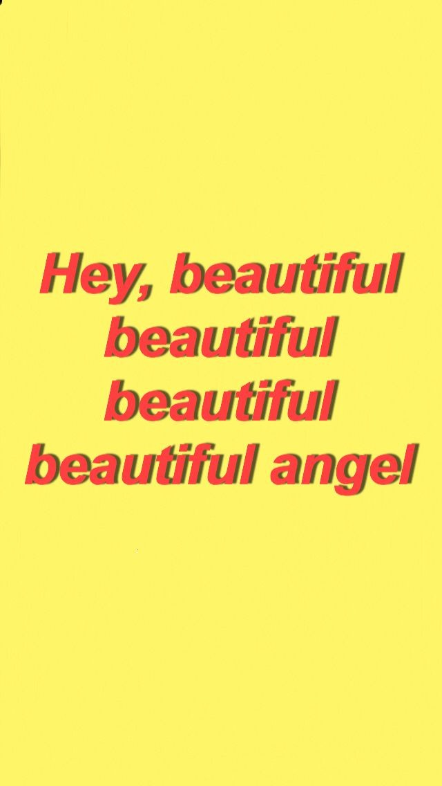
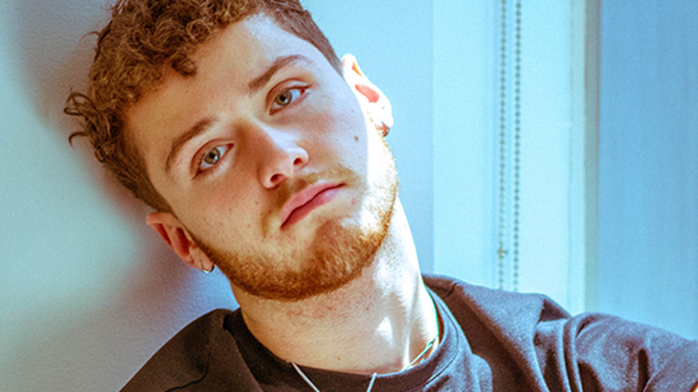
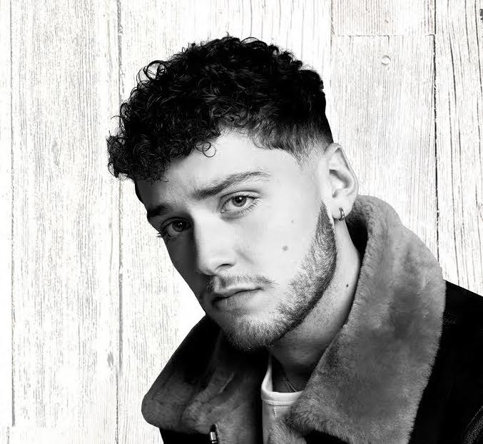
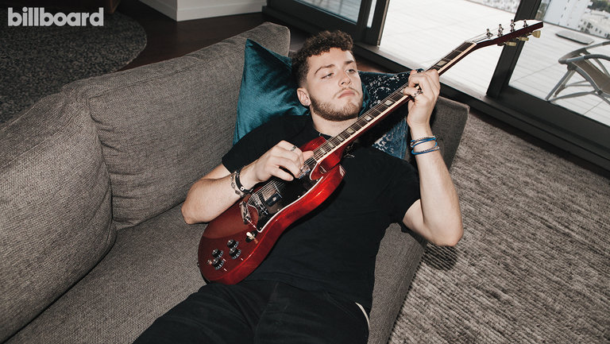

Bazzi

AboutAndrew Bazzi (born August 28, 1997), known mononymously as Bazzi, is an American singer, songwriter, rapper and record producer. His song "Mine", released in October 2017, gained popularity in early 2018 when it became a meme through the use of a Snapchat lens filter featuring the song.